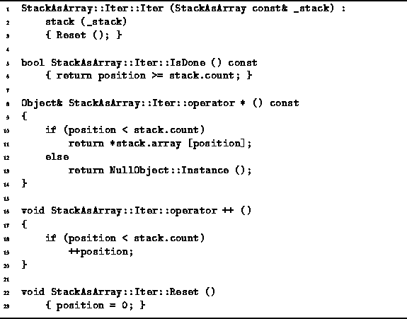

Data Structures and Algorithms
with Object-Oriented Design Patterns in C++
Data Structures and Algorithms
with Object-Oriented Design Patterns in C++
In addition to the StackAsArray class,
Program  also defines the nested class Iter.
Notice that the StackAsArray::Iter class
is a friend
of the StackAsArray class.
The friend of a class has access to the private member variables
and functions of that class.
Consequently, the implementation of the iterator
depends on the implementation of the container.
also defines the nested class Iter.
Notice that the StackAsArray::Iter class
is a friend
of the StackAsArray class.
The friend of a class has access to the private member variables
and functions of that class.
Consequently, the implementation of the iterator
depends on the implementation of the container.

Program: StackAsArray::Iter Class Member Function Definitions
Recall from Chapter
that an iterator is meant to be used like this:
StackAsArray stack;
stack.Push (*new Int (3));
stack.Push (*new Int (1));
stack.Push (*new Int (4));
Iterator& i = stack.NewIterator ();
while (!i.IsDone ()) {
cout << *i << endl;
++i;
}
delete &i;
This example declares the variable stack,
pushes several Int objects onto the stack,
and then uses an iterator to systematically print out all
of the elements contained in the stack.
The StackAsArray::Iter class definition is given
in Program .
Two member variables are defined--stack and position.
The former is a const reference to a StackAsArray;
the latter, an unsigned integer.
The StackAsArray::Iter constructor takes as its lone
argument a const reference to an StackAsArray object
and it makes the stack member variable refer to that object.
Then, it calls the Reset member function which sets the
position member variable to zero.
The effect of all this is to associate the iterator
with the given stack instance
and to make it refer to the first element
(i.e., the one at the bottom) of the associated stack.
Clearly, the running time of the StackAsArray::Iter
constructor is O(1).
The IsDone member function is called
in the loop termination test of the while loop given above.
The purpose of IsDone member function is to determine
when all of the contained objects have been exhausted.
In Program this occurs when
the variable position is equal
to the count variable of the associated stack.
The running time of IsDone is O(1).
The dereferencing operator, operator*,
is called in the body of the for loops
to access the object to which the iterator refers.
It returns a reference to the appropriate Object in the stack,
provided that the list has not been exhausted,
i.e., provided that the value of the position variable
in the range between 0 and  .
Otherwise, it returns a reference to the NullObject instance
when the position is invalid.
.
Otherwise, it returns a reference to the NullObject instance
when the position is invalid.
Finally, the increment operator, operator++, is used to cause the iterator to advance its position to the next contained object. In this case, advancing the position simply means adding one. This operator does nothing if the position is initially invalid. In either case, the running time is simply O(1).
 Copyright © 1997 by Bruno R. Preiss, P.Eng. All rights reserved.
Copyright © 1997 by Bruno R. Preiss, P.Eng. All rights reserved.